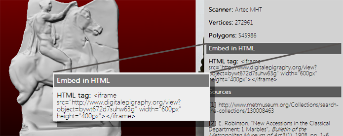
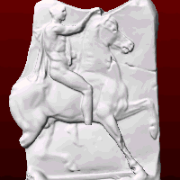
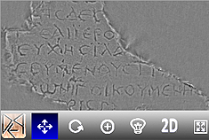

Embed 3D archaeological artifacts into your website or database
You can easily embed the 3D objects of our Digital Epigraphy and Archaeology database into your own web-site, blog, or personal database. Each virtual exhibit has an HTML tag that can be easily found in the archaeological record of the exhibit (see image below).

You can copy and paste the corresponding tag into your web-site at a location and size of your choice. The viewer is based on the new canvas capabilities of HTML5 and webGL, which can render 3D content on websites. There is no need to download additional plugins to use these technologies, since they are already included in the majority of the popular desktop and mobile web-browsers, such as Mozilla Firefox, Chrome, Opera, and Safari.
The main advantage of this viewer is that it can be easily embedded into websites by using the following HTML tag:
The width and height can be customized according to the design of your website by changing the corresponding parameters in the above HTML tag. Multiple objects can be added to the same website by using this tag with the corresponding identification number of the archaeological artifact from the Digital Epigraphy and Archaeology database, which can be accessed using the interface of the DEA Virtual Museum of World Heritage, or the Digital Epigraphy Toolbox.
This is an example of a 3D digitized artifact embedded in this website using the above HTML tag.
Move your mouse over the above viewer in order to interact with its features. You can move, rotate, zoom, and relight the exhibit by clicking on the proper icon and dragging your mouse over the inscription. Other options include 2D visualization of the heightmap of the inscription as well as full screen mode of the viewer.
This is an example of two viewers of a smaller size embedded in this website in a horizontal layout.
The corresponding HTML tags for the above viewers are the following:
You can easily create your own database of 3D inscriptions by digitizing your squeezes in 3D using a regular flatbed office scanner and our 3D digitization algorithm (Barmpoutis, Bozia, and Wagman, Machine Vision and Applications, 2010), which is available here.
"This easy-to-embed viewer facilitates the interoperability of various epigraphic and archaeological projects and is a big step towards the unification of digital epigraphic databases.", according to Dr. Bozia, Associate Director of the DEA project.
Our team supports Open Source Programming as a form of academic collaboration, and we provide the source code of this viewer, which can be easily accessed using the Developer Tools of your browser.
For questions or other inquiries please do not hesitate to communicate with us, using our contact details at www.digitalepigraphy.org or our Facebook group www.facebook.com/groups/digitalepigraphy/.
Support and Technology Tips:
For smooth interaction with all the features of the viewer it is advised that you set the width of the embedded viewer to 330 pixels or more.
WebGL is implemented in the majority of popular desktop and mobile web-browsers. A list of supported browsers can be found in Wikipedia. The most popular choices are:
Windows: Mozilla Firefox, Chrome, Opera, and Internet Explorer. (In IE it can be manually added using a third-party plugin.).
Mac OSx: Mozilla Firefox, Chrome, Opera, and Safari. (In Safari for OSx it can be enabled from the Preferences menu > Advanced tab > Show Develop menu in menu bar, and then from the Develop menu > Enable WebGL.)
Linux: Mozilla Firefox, Chrome, Opera.
Mobile and Tablets: WebGL is supported by the majority of web-browsers for Android devices. It is also supported in Microsoft Surface Pro, BlackBerry PlayBook, Nokia N900, and many other tablets and smart phones.
References:
1. A. Barmpoutis, E. Bozia, R. S. Wagman, "A novel framework for 3D reconstruction and analysis of ancient inscriptions", Journal of Machine Vision and Applications
2010, Vol. 21(6), pp. 989-998. PDF
2. Digital Epigraphy Toolbox, www.digitalepigraphy.org/toolbox.
3. WebGL specifications, www.khronos.org/webgl.
4. List of browsers that suppport WebGL, http://en.wikipedia.org/wiki/WebGL.
Funded in part by the NEH grant HD-51214-11.
Key Features:
Supported browsers:System requirements:
No plugins required.

3D visualization:

Interactive relighting:

2D heightmap view:
